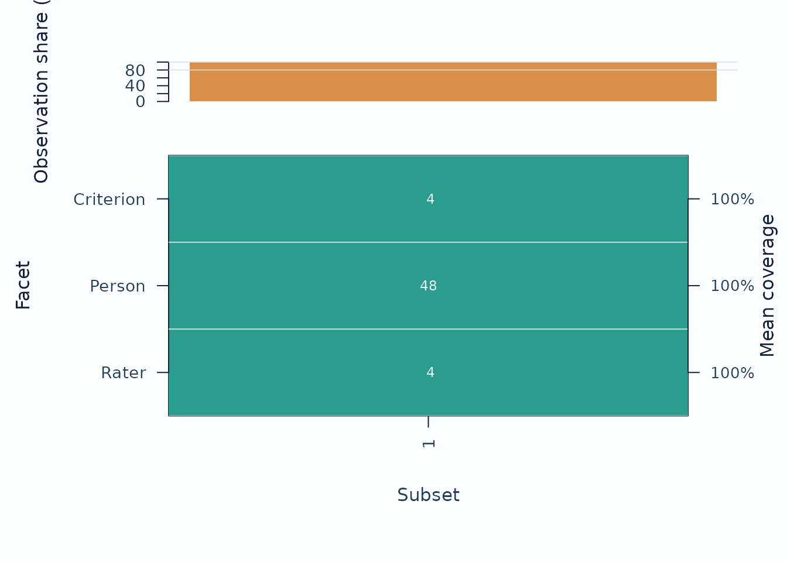
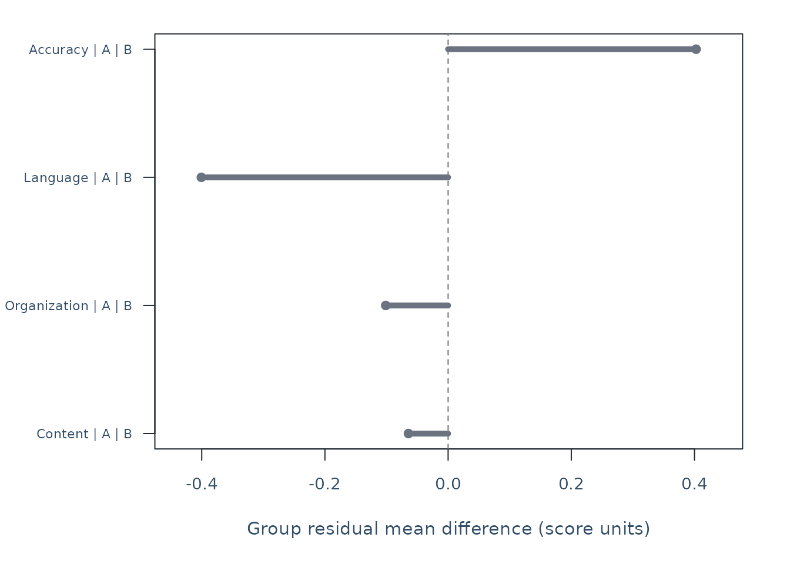
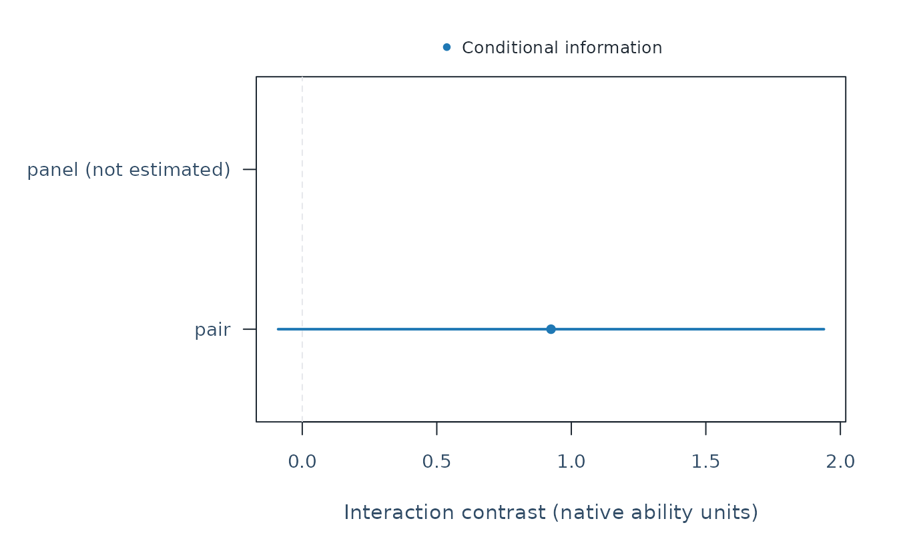
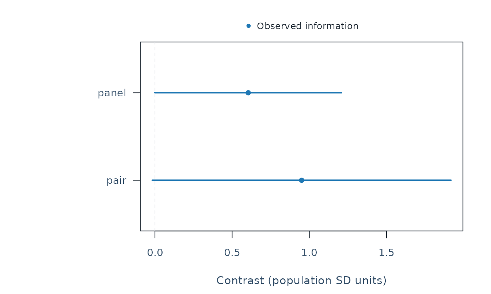

This vignette covers the package-native route for:
- checking whether a design is connected enough for a common scale
- exporting anchor candidates from an existing fit
- screening differential facet functioning (DFF)
- deciding whether subgroup contrasts are linked and available for screening
For a broader workflow guide, see
vignette("mfrmr-workflow", package = "mfrmr"). For the
shorter help-page map, see
help("mfrmr_linking_and_dff", package = "mfrmr").
First example: reuse selected criterion locations
An anchor is a parameter value held fixed during estimation. A shared Person, rater or task is an observed link; sharing an identity does not require fixing its value. For example, a direct Rater anchor at 0.35 logits holds that rater’s location at 0.35, whereas a group anchor at 0.20 for two raters fixes their sum at 0.40 and lets their individual values differ.
Start by loading the packaged synthetic teaching ratings. Each row is one Person’s score from one Rater on one Criterion, on a 1–4 rubric. We split the 48 Persons into two teaching cohorts with the same four raters and four criteria. This illustrates reuse of known identities; it is not empirical evidence that a real rater or criterion stays invariant over time.
library(mfrmr)
ratings <- load_mfrmr_data("example_core")
head(ratings[, c("Person", "Rater", "Criterion", "Score")])
#> Person Rater Criterion Score
#> 1 P001 R01 Content 3
#> 2 P002 R01 Content 3
#> 3 P003 R01 Content 4
#> 4 P004 R01 Content 3
#> 5 P005 R01 Content 2
#> 6 P006 R01 Content 3
people <- unique(ratings$Person)
baseline_data <- ratings[ratings$Person %in% people[1:24], , drop = FALSE]
new_data <- ratings[ratings$Person %in% people[25:48], , drop = FALSE]Fit the reference and select its Criterion locations.
make_anchor_table() requires a numerically eligible source,
but does not establish substantive invariance. If it refuses a source,
inspect that model’s diagnostics; exporting with
readiness_policy = "review" is for inspection, not for
bypassing the requirement in a new calibration.
baseline <- fit_mfrm(
baseline_data, "Person", c("Rater", "Criterion"), "Score",
method = "MML", rating_min = 1, rating_max = 4,
category_policy = "preserve"
)
anchors <- make_anchor_table(baseline, facets = "Criterion")
anchors
#> # A tibble: 4 × 3
#> Facet Level Anchor
#> <chr> <chr> <dbl>
#> 1 Criterion Accuracy 0.202
#> 2 Criterion Content -0.480
#> 3 Criterion Language 0.130
#> 4 Criterion Organization 0.148The columns name the facet, its exact level ID, and its fixed
location in internal logit coordinates. They do not contain thresholds,
slopes or source standard errors. Values transformed for display with
Umean/Uscale must not be copied into this
table as though they were internal logits. The default
digits = NULL preserves fitted values for reuse. Rounding
each row can break a whole-facet zero sum, so round a display copy
rather than the anchor input.
Review the intended constraints against the receiving data before fitting. Unknown IDs, duplicate rows and incompatible targets need resolution; keeping the last duplicate row mechanically does not decide which value is justified.
anchor_review <- review_mfrm_anchors(
new_data, "Person", c("Rater", "Criterion"), "Score", anchors = anchors,
rating_min = 1, rating_max = 4, category_policy = "preserve"
)
anchor_review$issue_counts
#> # A tibble: 13 × 2
#> Issue N
#> <chr> <int>
#> 1 anchor_schema_mismatch 0
#> 2 group_anchor_schema_mismatch 0
#> 3 unknown_anchor_facets 0
#> 4 unknown_anchor_levels 0
#> 5 invalid_anchor_values 0
#> 6 duplicate_anchors 0
#> 7 unknown_group_facets 0
#> 8 unknown_group_levels 0
#> 9 invalid_group_labels 0
#> 10 duplicate_group_assignments 0
#> 11 missing_group_values 0
#> 12 group_value_conflicts 0
#> 13 overlap_anchor_group 0
anchor_review$anchors
#> # A tibble: 4 × 3
#> Facet Level Anchor
#> <chr> <chr> <dbl>
#> 1 Criterion Accuracy 0.202
#> 2 Criterion Content -0.480
#> 3 Criterion Language 0.130
#> 4 Criterion Organization 0.148
anchor_review$recommendations
#> [1] "Package count screen: consider >= 5 directly anchored levels per facet. This does not verify cross-run identity or empirical connectedness. Low-count facets: Criterion."
#> [2] "All levels are covered by direct or group constraints in: Criterion. Group members can still vary subject to their mean constraint; coverage is not a count of free parameters."
#> [3] "Package observation-count screen: about 30 observations per element are used for review. Low-observation facets: Person."
#> [4] "Supply anchors in internal logit coordinates, not Umean/Uscale display units. Use compatible score coding, orientation and reporting scales across linked analyses."
#> [5] "Current noncenter facet is 'Person'. Other facets sum to zero across all levels, including anchors and group totals. The ungrouped remainder balances those contributions; a single remaining level is fixed by that balance."The recommendation about five anchors is a configurable count screen,
not a universal minimum or proof that a design is linked.
FreeLevels counts levels outside direct/group constraints,
not independent parameters: group members can vary subject to their
mean, while centering removes a degree of freedom.
Now fit the new cohort. This example fixes all four Criterion locations, so that facet has no unanchored remainder. Rater locations and category thresholds are estimated again. The same rubric is specified explicitly in both fits.
linked <- anchor_to_baseline(
new_data, baseline, "Person", c("Rater", "Criterion"), "Score",
anchor_facets = "Criterion", anchor_policy = "error",
rating_min = 1, rating_max = 4, category_policy = "preserve"
)
summary(linked)
#> --- Anchored Fit Summary ---
#> Inference-ready: TRUE
#> Optimizer returned code 0: TRUE | Status: converged
#> Anchor candidates: 4 | Matched non-Person anchors: 4 | Flagged: 0
#>
#> Fixed-anchor differences check constraints, not stability across administrations.
#> Fixed-anchor differences by facet:
#> Facet N Mean_Drift Max_Drift N_Flagged
#> Criterion 4 0 0 0
linked$fit$facets$others
#> # A tibble: 8 × 3
#> Facet Level Estimate
#> <chr> <chr> <dbl>
#> 1 Rater R01 -0.246
#> 2 Rater R02 -0.404
#> 3 Rater R03 0.269
#> 4 Rater R04 0.380
#> 5 Criterion Accuracy 0.202
#> 6 Criterion Content -0.480
#> 7 Criterion Language 0.130
#> 8 Criterion Organization 0.148
linked$drift[, c("Facet", "Level", "Baseline", "New", "Drift")]
#> # A tibble: 4 × 5
#> Facet Level Baseline New Drift
#> <chr> <chr> <dbl> <dbl> <dbl>
#> 1 Criterion Accuracy 0.202 0.202 0
#> 2 Criterion Content -0.480 -0.480 0
#> 3 Criterion Language 0.130 0.130 0
#> 4 Criterion Organization 0.148 0.148 0Read linked$fit$facets$others for the fitted facet
locations. linked$drift compares only retained
fixed non-Person anchors: its zero differences are
expected by construction and do not test stability. For independent
screening, fit waves separately and use
detect_anchor_drift(), retaining its offset, common-element
and uncertainty limitations. Keep the full linked object
when saving the analysis, so its fitted model and supplied anchors stay
together.
Limits that matter before using real data
-
Whole-facet centering includes anchors. Unless a
facet is
noncenter_facet,centering_scope = "facet"makes all its levels sum to zero. With R01 = 0.70, the other ungrouped raters sum to -0.70; a single remaining rater is fixed at -0.70. Group totals also contribute. Incompatible totals stop before fitting, even whenanchor_policy = "silent".centering_scope = "remainder"reproduces the earlier restriction that the ungrouped, unanchored levels sum to zero. Saved results are not converted by reloading them; fitting under a different convention requires re-estimation. For ordinary additive RSM/PCM JML,centering_scope = "anchor_origin"instead lets direct or group anchors replace their facet’s centering, as FACETS does. Choose an unanchored, active noncenter facet and repeat the same arithmetic mean target for each group member. This does not change the default or account for estimated-anchor error. -
The helper does not copy every setting. The model,
estimation method, centering convention and MML integration mode are
inherited automatically. Older baselines without convention metadata
retain
"remainder". Repeat the intended category policy, rubric, orientation, PCM/GPCM roles, uncentered facet and population model. RSM/PCM MML without a population model fixes ability to a standard-normal distribution; it does not estimate a changed cohort mean/variance. An explicitly requestedpopulation_formula = ~ 1estimates normal-population moments and needsperson_data; seehelp("fit_mfrm")for its assumptions. - Person anchors require JML. Current MML integrates ability and rejects fixed Person values or Person group means. Common Persons can be present in the design without being anchored. Choosing JML changes the estimator and should follow the analysis question, not merely avoid an error.
- Anchor uncertainty is conditional. The new fit treats supplied values as exact. It does not propagate their source estimation error; an unavailable SE for a fixed value does not mean its source was perfectly known. Compare defensible anchor sets when conclusions depend on that choice.
-
Locations are not the entire calibration. To hold
thresholds and other supported calibration components fixed while
scoring, use
extract_mfrm_calibration(), validate and freeze the saved calibration, then callscore_mfrm_calibration(). Seehelp("mfrm_calibration_workflow")for its supported models and required checks.
The FACETS centering rules help distinguish an origin constraint from a fixed external value, but are not mfrmr’s partial-anchor convention. Uto (2021, pp. 1442–1444) explains common-rater/task linking and its design dependence. That simulation fixes generated common parameters and removes a redundant rater constraint; its Bayesian estimation does not validate mfrmr’s different constraints or supply uncertainty propagation for estimated anchors.
Annual speech contests with common recordings
Suppose each year’s contestants give a three-minute English speech. Most judges return and use the same rubric. Before the contest, they rate a set of recorded speeches used in previous years. You want to know whether judges became more severe, whether the whole panel changed its standard, and whether the new contestant group performed differently on a common scale.
The common recordings offer a link: the performance in a fixed recording does not improve from one year to the next. Its interpretation must still be comparable under the rubric and viewing conditions. An unchanged time limit or criterion name alone does not establish this. Because contestants change, a difference between annual groups is not individual growth.
This section explains the design and the limits of current functions. A complete recording-based annual analysis, including formal year-difference intervals, is not yet verified in mfrmr. The teaching cohorts in the first example above do not contain annual reratings of common recordings.
Identify the performance, judge and rating occasion
Keep one row per individual rating on one criterion. The following IDs illustrate identities to preserve; they are not supplied example data.
| Observation | Performance ID | Judge ID | Rating year |
|---|---|---|---|
| Judge A rates reference video V01 in 2025 | V01 | A | 2025 |
| Judge A rates that same video in 2026 | V01 | A | 2026 |
| Judge A rates a new 2026 contestant’s speech | Speech_2026_01 | A | 2026 |
Also retain criterion, score, session, training phase and video/live mode. The same speaker giving a new speech needs a new performance ID when the measurement target is that speech. Preserve individual ratings before discussion or disclosure of reference scores. Consensus scores alone cannot recover differences among judges. Include performances spanning relevant levels and criterion profiles; there is no universal adequate recording count. The five-common-element helper warning is not such a rule.
Choose what is shared and what is allowed to change
In joint calibration, analyze years together, sharing an unknown measure for each common recording while allowing judges’ severities to vary by year. A judge-year effect represents a particular judge in a particular year; retain the original judge ID so these effects can later be compared. The recording measures can be estimated rather than supplied as numerical anchors.
In fixed-reference calibration, use previously estimated recording measures as fixed values for a later year and estimate that year’s judge effects. This preserves a chosen reference scale but conditions on its estimated values. When the recordings take the Person role, current mfrmr requires JML for direct Person anchors; MML rejects them. Sharing unknown performance measures is a different design and does not require these anchors. Formal JML structural intervals remain unqualified.
Returning judges should not automatically be fixed to their previous severities when their changes are the question. A panel mean fixed separately in every year also prevents estimating a common shift. For example, centering away a +0.40-logit increase for all judges would leave no panel-wide increase to report. FACETS describes group anchoring as an assumption about average severity, not proof that the panel stayed stable (Linacre, 2012, p. 9).
Specify scale constraints, criterion/category stability and ability-population assumptions together. Unrestricted year effects and judge-year effects would overlap; freely changing criteria can also absorb a common scoring shift. Separate fixed-standard-normal MML fits do not estimate changing cohort means. In a joint model, do not assign conflicting Person-level year covariates to a common recording rated in several years. Its rating occasion is not a different underlying performance.
Read the existing helper results for their stated purpose
| Output | What it shows | What it does not establish |
|---|---|---|
linked$fit$facets$others from
anchor_to_baseline()
|
Facet locations under the chosen constraints | A formal annual comparison without compatible scales and an appropriate contrast analysis |
linked$drift |
Whether retained fixed non-Person anchors equal the supplied values | Stability of those elements, or a drift estimate for the reference recordings |
drift$drift_table from
detect_anchor_drift()
|
Common-element differences after removing
LinkOffset
|
Absolute panel change, or calibrated significance of the SE ratio |
chain$cumulative from
build_equating_chain()
|
Accumulated screened adjacent-wave offsets | Propagated uncertainty or proof of annual scale comparability |
When judges are the linking set, detect_anchor_drift()
subtracts their common shift. If all selected differences are +0.40
logits, LinkOffset is +0.40 and every residual
Drift is zero. This describes relative alignment, not
evidence that the panel was stable. Interpreting LinkOffset
itself as panel change is also unjustified without a separate scale
reference.
Agreement after training, operational stability and correctness against an expert benchmark are different outcomes. Check familiar-score memory, for example with additional recordings not used to teach the reference scores. If the contest is rated live but the calibration uses video, paired live/video ratings of some performances can help assess whether the estimated severity transfers. Repeated ratings can be dependent even when their IDs are correct.
Annual-difference uncertainty needs the covariance between the relevant estimates, or propagation of reference-calibration uncertainty where applicable. Adding two squared SEs assumes away covariance; marginal interval overlap is not a test of change. Report the reference, assumptions, number of common performances and unavailable results alongside any point comparisons.
Which uncertainty is available with anchors?
An anchor does not make every interval unavailable. For ordinary
unit-weight RSM/PCM MML with a fixed standard-normal population and
fixed-grid integration, mfrm_facet_intervals() can supply
model-information or cluster-sandwich intervals for free facet locations
and contrasts, subject to its checks. They condition on the supplied
anchors. A fixed target has SE zero and no inferential bounds; this does
not describe the uncertainty of its original calibration.
If the population mean and variance are also estimated, anchored
point estimation is supported, but the native location and population
interval helpers currently exclude anchors and group constraints.
Inspect fit$readiness$fit:
EstimabilityState = "not_evaluated" means the
identification review is incomplete, not that numerical optimization
failed or the model was proved unidentified. The separate
fit$data_review$estimability$nonlinear_local_estimability
can pass its local-rank check while overall readiness remains under
review. That local result alone does not authorize intervals or
exporting anchors for reuse. Choose the population assumption for the
assessment question, not simply because one configuration supplies
intervals.
For one-family GPCM, model-information and
cluster-sandwich slope and curve intervals can include fixed facet
anchors or group means when their own numerical checks pass. Use
confint(fit, parm = "slopes") for relative slopes and
mfrm_curve_intervals(fit, newdata) for curves at specified
ability values and rating contexts. Their returned explanations state
that source-anchor uncertainty is excluded. Fixing a rater’s location
does not fix its slope, category thresholds or entire response curve. A
group mean does not fix each member.
The restrictions differ by output. Anchored one-family GPCM currently
has no native-location or profile-slope interval route, and no
portable-calibration export. Fitted-object scoring with
predict_mfrm_units() has separate source and scoring
checks. An available slope interval does not certify that source for
scoring: its finer-grid integration check may still fail. Explicit
readiness_policy = "review" retains review-only values and
does not make them operational scores. These distinctions also apply
after saving results.
Reusing an analysis saved before the centering change
Start with what you want to preserve or change. Saving a new copy does not convert the statistical model.
| Intended task | Required action | What changes? |
|---|---|---|
| Reopen the original fit |
readRDS(); inspect
summary(fit, compute = "never") and
specifications_report(fit)
|
No estimates or constraints. A native fit lacking convention metadata retains legacy remainder centering. |
| Repeat the original estimation | Generate build_mfrm_replay_script() and run it with the
original data |
A new fit under the original convention, with newly evaluated readiness. |
| Adopt whole-facet centering | Refit with centering_scope = "facet", preserving the
intended other settings |
The anchored constraints and potentially estimates, SEs and conclusions. |
| Update interval explanations or fixed-contrast derivatives | Recompute the interval object from its unchanged source fit | Derived output; no model refit is needed solely for this update. |
| Repair earlier anchored subgroup DFF | Rerun analyze_dff() from the baseline |
Subgroup models are refitted; reading the old DFF object does not repair them. |
| Describe an old portable calibration more precisely | Re-extract from its source fit with the required checks, then validate and freeze a new artifact | Explicit constraint labels; this alone does not change its coefficients or convention. |
For a runnable illustration, create an analysis with the legacy convention using the packaged ratings already loaded above. If you already have an old fit file, start by reading that file instead. The example fixes a Rater location, uses RSM with a fixed standard-normal population and keeps Person as the uncentered facet. These choices illustrate migration; choose the population assumption for your assessment question.
migration_anchor <- data.frame(Facet = "Rater", Level = "R01", Anchor = 0.70)
legacy_fit <- fit_mfrm(
ratings, "Person", c("Rater", "Criterion"), "Score",
model = "RSM", method = "MML", anchors = migration_anchor,
noncenter_facet = "Person", centering_scope = "remainder",
rating_min = 1, rating_max = 4, category_policy = "preserve",
quad_points = 31, maxit = 400, reltol = 1e-9
)
fit_file <- tempfile(fileext = ".rds")
saveRDS(legacy_fit, fit_file)
restored_fit <- readRDS(fit_file)
unlink(fit_file)
spec <- specifications_report(restored_fit)$data_spec
spec[spec$Setting %in% c("NonCenteredFacet", "CenteringScope"), ]
#> Setting Value
#> 6 NonCenteredFacet Person
#> 7 CenteringScope remainderCenteringScope = "remainder" describes the fitted
constraint, including for native files saved before this field existed.
It is not changed to the new default merely because a newer package
reads the file. Do not assign a new value to
fit$config$centering_scope or recenter its coefficient
table: the likelihood, parameter mapping and uncertainty still belong to
the original fit.
To change the convention, fit a separate model from the original responses. Here only the declared centering changes. Inspect its numerical and design status; the number of quadrature points is not an accuracy guarantee.
updated_fit <- fit_mfrm(
ratings, "Person", c("Rater", "Criterion"), "Score",
model = "RSM", method = "MML", anchors = migration_anchor,
noncenter_facet = "Person", centering_scope = "facet",
rating_min = 1, rating_max = 4, category_policy = "preserve",
quad_points = 31, maxit = 400, reltol = 1e-9
)
summary(updated_fit, compute = "never", detail = "brief")
#> Many-Facet Measurement Model Summary
#> Model: RSM | Method: MML | N: 768 | Persons: 48 | Facets: 2 | Categories: 4
#>
#> Decision
#> - Interpretation: Fit-readiness requirements satisfied; formal precision
#> review required
#> - Formal inference: No
#> - Why: Formal precision support has not been evaluated.
#> - Next: Run `diagnose_mfrm()` and pass its result as `diagnostics =` to
#> evaluate formal precision support; fit readiness alone is not a
#> formal-inference decision.
#> MML engine: direct (requested: direct) | Integration: fixed non-adaptive
#> Gauss-Hermite, q=31 | latent dimensions=1
#> Population identification: fixed N(0,1) | discrimination=1
#> Centering: whole declared facet, including anchors and group totals.
#> LogLik: -957.498 | Canonical MML AIC: 1928.996 | Person-BIC: 1942.094 |
#> Sclove SABIC: 1920.133
#>
#> Visual workflow (in order)
#> Priority Visual Required Available
#> 1 mfrmr Wright map with SE TRUE TRUE
#> 2 FACETS-style Wright map FALSE TRUE
#> 3 Infit pathway FALSE FALSE
#> Interpretation
#> Diagnostic interpretation available
#> Diagnostic interpretation available
#> Unavailable
#> Plot commands are stored in `$required_visual$Route`.
#>
#> Status
#> - Overall status: Fit completed; review diagnostics before reporting
#> - Convergence: converged (severity: pass, maximum absolute gradient: 7.42e-05)
#> - Estimation path: RSM / direct
#> - Reporting readiness: Fit completed; diagnostics and reporting review can
#> proceed
#>
#> Workflow readiness
#> Domain Status
#> Fit Checks passed
#> Numerical Checks passed
#> Data Checks passed
#> Design Connectivity checked
#> Stability Checks passed
#> Diagnostics Not assessed
#> Reporting Ready for diagnostic review
#>
#> Key warnings
#> - No population model was requested; MML used an unconditional normal person
#> distribution.
#>
#> Next actions
#> - Run `diagnose_mfrm()` and pass its result as `diagnostics =` to evaluate
#> formal precision support; fit readiness alone is not a formal-inference
#> decision.
#> - After reviewing convergence, run `review <- summary(fit, profile = "facets",
#> detail = "brief")` for the comprehensive measurement review; FACETS software
#> is not required.
#> - Then draw the complete native Wright map with `plot(fit, type = "wright",
#> show_ci = TRUE, top_n = Inf, preset = "publication")`.
#> - Reuse `review$results$diagnostics`; call `diagnose_mfrm()` again only for
#> residual PCA or other custom settings.
#> - Use `reporting_checklist(fit, diagnostics = review$results$diagnostics)` for
#> reporting readiness.
#>
#> Facet measure overview
#> Facet Levels MeanEstimate SDEstimate MinEstimate MaxEstimate Span
#> Criterion 4 0 0.290 -0.419 0.251 0.67
#> Rater 4 0 0.547 -0.630 0.700 1.33
#>
#> Person measure distribution (aggregate; no identifiers)
#> Persons DistributionN ReviewExcludedExtremeEAPs Mean SD Median Min
#> 48 48 0 -0.004 0.998 0.074 -1.925
#> Max Span MeanPosteriorSD Interpretation
#> 2.259 4.184 0.325 Subject to the fit's interpretation decision
#>
#> Step parameter summary
#> Steps Min Max Span Monotonic
#> 3 -1.343 1.398 2.741 TRUE
#>
#> Analyses intentionally not run by summary
#> Section Status
#> Bias / DIF Not run automatically
#> Residual PCA Not run automatically
#> Linking / anchor drift Not run automatically
#> Detail
#> Bias/DIF requires an explicitly chosen substantive contrast and is not screened automatically.
#> Residual PCA is not computed by the summary workflow; request it explicitly with diagnose_mfrm().
#> Anchor drift/linking requires an explicit multi-fit or multi-wave design and is not inferred automatically.
#>
#> Section availability requiring attention
#> Section Status
#> Diagnostics Not requested
#> Detail
#> The fit profile does not compute diagnostics. Use profile = 'facets' or 'reporting' to request them.
#>
#> Structured result access
#> - Use `summary(fit, profile = "facets")` for the comprehensive measurement review; FACETS software is not required.
#> - Use `summary(fit, detail = "full")` for legacy fit-level detail.
old_raters <- subset(restored_fit$facets$others, Facet == "Rater")
new_raters <- subset(updated_fit$facets$others, Facet == "Rater")
data.frame(
Convention = c("remainder", "facet"),
FixedR01 = c(old_raters$Estimate[old_raters$Level == "R01"],
new_raters$Estimate[new_raters$Level == "R01"]),
OtherRaterSum = c(sum(old_raters$Estimate[old_raters$Level != "R01"]),
sum(new_raters$Estimate[new_raters$Level != "R01"]))
)
#> Convention FixedR01 OtherRaterSum
#> 1 remainder 0.7 1.387779e-17
#> 2 facet 0.7 -7.000000e-01Both fits keep R01 at 0.70. The remaining raters sum to zero in the legacy fit and -0.70 in the whole-facet fit. This changes R01’s comparison with the other raters; it is not just a renamed column. Retain the two analyses under different filenames, and report the convention with the other model settings. Complete facet anchors can also become incompatible with a whole-facet zero sum. Resolve that model specification explicitly rather than rounding anchors or silently switching the population model.
For more complex analyses,
build_mfrm_replay_script(restored_fit, data_file = "ratings.csv")
provides a recipe with stored anchors, group means and the original
convention. It requires the original analysis data at the specified
path. Review its generated fit_mfrm() call before
deliberately changing the convention; preserve population covariates,
category handling, orientation, uncentered facets and PCM/GPCM owners.
This recipe refits. By contrast, the replay written by
export_mfrm_results() reopens its saved results bundle
without reconstructing the model.
If only a frozen calibration survives, retain its original scoring
meaning. Generic old identification labels are insufficient to infer its
centering convention. See
vignette("mfrmr-portable-calibration", package = "mfrmr")
for re-extraction and validation; changing a label is not recalibration.
Earlier MML fits containing Person anchors require special review
because those values were ignored. Current fitting rejects them;
choosing centering_scope = "remainder" does not repair that
earlier analysis.
Comparing an anchor with TAM or ConQuest
An anchor is a fixed value in all three programs, but the surrounding constraints determine what that value means. Copying a number from another program is insufficient when its parameterization or population model differs.
| Question | mfrmr | TAM | ConQuest |
|---|---|---|---|
| What is fixed? | A named facet location in anchors
|
Indexed response-design coefficients in xsi.fixed
|
Response-design coefficients imported with
anchor_parameters / anchor_xsi
|
| Are steps and slopes included automatically? | No; the location-anchor table omits them | Check the response and scoring designs; slope controls are separate | Check the response design and scoring parameters;
anchor_tau is separate |
| How is the population specified? | Ordinary RSM/PCM MML defaults to fixed standard-normal ability; population modeling is explicit | Specify beta.fixed, variance.fixed and the
selected fitting function’s other controls |
Specify population anchors and location/scale constraints explicitly |
| Can Person values be fixed? | Supported in JML; rejected in MML |
tam.jml() documents theta.fixed for
version = 1
|
The manual states that anchor_theta is ignored in
MML |
The TAM
MML documentation, TAM
JML documentation and ConQuest command
reference describe these controls. For ConQuest, read
import together with set; importing anchors
alone does not specify all location and scale constraints. Parameter
indices must be checked against the actual model design and retained
levels. A changed index can fix the wrong coefficient without a syntax
error.
For example, let four rater severities be , with R01 fixed at , and no group constraints:
| Constraint choice | Remaining raters | R01 minus the mean of the remaining raters |
|---|---|---|
mfrmr legacy centering_scope = "remainder"
|
0.70 | |
mfrmr default centering_scope = "facet"
|
, hence the remaining sum is -0.70 | , approximately 0.933 |
The second row applies, for example, to TAM’s
tam.mml.mfr(formulaA = ~ item + rater + step, constraint = "cases")
and ConQuest’s model task+rater+step with
lconstraints=cases. Those settings also leave the first
task term uncentered, unlike mfrmr’s default. These are specific model
configurations, not universal software conventions. The different rater
contrasts show why applying the same anchor and then shifting the final
locations is not generally an equivalent analysis. Group-mean anchors
need corresponding linear constraints; fixing every member to the group
mean would impose a different model.
For unit-slope RSM/PCM with all facet locations centered and an estimated population mean , another equivalent origin uses a zero population mean and uncentered task locations: set and . Rater severities, centered step ladders and population variance stay the same, so every response probability is unchanged. This mapping applies to the configuration with Rater anchors above. If a task value is also anchored, its constraint must be transformed with it. In particular, estimating population variance and fixing it to one are different models; moving the origin does not reconcile that difference. Checking this mapping is distinct from running and comparing both programs’ optimizers.
To compare programs, first match the ratings, category coding, response probabilities, free and fixed parameters, and population assumptions. A coordinate transformation must carry the anchors and population parameters with it. Then check numerical integration and optimization. Finally compare SEs for the same parameter or contrast, transforming the covariance matrix when coordinates differ. A point-estimate match alone does not validate an uncertainty method or include source-anchor uncertainty.
A bounded check using all 48 Persons, four raters and four criteria
in example_core illustrates both outcomes. Under the
whole-rater constraint above, TAM 4.3.25 and ConQuest 5.47.5 agreed to
within
in their free response-design coefficients. A separate explicit TAM
design representing mfrmr’s legacy remainder constraints agreed with
that mode to within
,
when mfrmr used 81-point Gauss–Hermite integration. Both comparisons
fixed ability to
.
For the latter comparison, 31-point integration in that legacy mode left
a maximum coefficient difference of about 0.00067; increasing
integration precision resolved it. Equal node counts across programs do
not guarantee equal quadrature rules or accuracy.
This checks one RSM configuration and its point estimates, not general compatibility for PCM, GPCM, group constraints, JML or SEs. It does not make 81 points a universal requirement. More importantly, being able to reproduce mfrmr’s restricted model in another program does not establish that its partial-anchor constraints answer a particular linking question. Decide which locations and population moments should remain free before choosing the model.
Fit and diagnose the observed ratings
library(mfrmr)
bias_df <- load_mfrmr_data("example_bias")
fit <- fit_mfrm(
bias_df,
person = "Person",
facets = c("Rater", "Criterion"),
score = "Score",
method = "MML",
model = "RSM",
rating_min = 1, rating_max = 4, category_policy = "preserve"
)
diag <- diagnose_mfrm(fit, residual_pca = "none")1. Check connectedness first
Use subset_connectivity_report() before interpreting
subgroup or cross-form contrasts.
sc <- subset_connectivity_report(fit, diagnostics = diag)
sc$summary[, c("Subset", "Observations", "ObservationPercent")]
#> Subset Observations ObservationPercent
#> 1 1 384 100
plot(sc, type = "design_matrix", preset = "publication")
Interpretation:
- Sparse rows or columns indicate weaker design coverage.
- Weak coverage should lower confidence in subgroup comparisons.
- Use the co-observation design graph, not rater agreement, severity-direction, or halo response networks, to assess empirical connectedness. Response-network correlations do not create a common scale.
2. Export anchor candidates
make_anchor_table() mechanically exports fitted values
in the direct-anchor schema. Its output is a candidate table, not a
validated anchor set.
anchors <- make_anchor_table(fit, facets = "Criterion")
head(anchors)
#> # A tibble: 4 × 3
#> Facet Level Anchor
#> <chr> <chr> <dbl>
#> 1 Criterion Accuracy 0.524
#> 2 Criterion Content -0.199
#> 3 Criterion Language -0.275
#> 4 Criterion Organization -0.0499By default, make_anchor_table() refuses a source whose
current readiness record does not have
InferenceReady = TRUE. Use
readiness_policy = "review" only to inspect review-only
candidate values, not to reuse them as anchors. For a ready reference
fit, also document cross-run element identity and invariance and confirm
compatible model, score, orientation, and population conventions. Then
use review_mfrm_anchors() to check table syntax and
receiving-data support. That review does not certify the substantive
link.
Keep the roles distinct: common ratings or common elements supply
observed design overlap; anchors fix individual parameters;
group_anchors constrain a group mean under an externally
justified target or equal-mean assumption. Neither constraint type
manufactures empirical overlap.
Design the link, not only the percentage
No anchor percentage or count is universally adequate. In sparse designs, link quality also depends on coverage, the distribution and redundancy of the links, whether one articulation point or critical edge holds the network together, the location and model fit of the linking set, and the intended use of ranks or classifications. Inspect both Rater-centered and Person/task- centered assignment graphs rather than treating a minimum count as proof of a common scale. This distinction is consistent with work on sparse linking networks by Myford and Wolfe (2000), Wind and Jones (2018), and Uto (2021).
Fixed anchor values also carry uncertainty from their source calibration. Current mfrmr drift and chain summaries do not propagate every source-fit, offset, and cross-fit covariance component. When results depend on the anchor set, compare defensible alternatives and report that sensitivity. Robitzsch (2024, pp. 1181–1182, 1187–1188) examines a different source of linking error: random uniform DIF in fixed-item 2PL calibration. Its derivation neglects Person sampling error and does not provide a variance estimator for fitted population parameters. It supports checking invariance, not claiming that mfrmr propagates all linking uncertainty.
3. Compare group residuals
Residual comparisons describe how observed-minus-expected scores differ between groups. They use score units and do not test differential functioning.
A group with higher average ability can score higher without differential functioning. DFF concerns a facet difference at the same ability. Residual screens inherit the fitted population assumptions, and fixed-standard-normal RSM/PCM subgroup refits do not estimate group ability distributions. Linking anchors alone do not address an omitted group difference. Review these assumptions before interpreting a residual difference involving a rater or criterion.
Representing group ability differences is necessary for a suitable population model, but does not turn the current residual screen into a calibrated DFF test. MML residuals evaluate expected scores at EAP ability estimates. Because the response function is nonlinear, a no-DFF model can still have different mean residuals across groups. This concerns the null being tested as well as its standard error.
The residual method therefore returns no p-values, confidence
intervals or positive/negative classifications. For compatibility, its
former SE and test columns contain NA. Recompute older
residual results with analyze_dff() using the existing fit
and original data; no model refit is needed.
dff_resid <- analyze_dff(
fit,
diag,
facet = "Criterion",
group = "Group",
data = bias_df,
method = "residual"
)
screen <- plot(dff_resid, type = "summary")
comparisons <- plot_data(screen, "pairs")
comparisons[, c("Level", "Group1", "Group2", "Contrast",
"N_Group1", "N_Group2", "PlotStatus")]
#> Level Group1 Group2 Contrast N_Group1 N_Group2 PlotStatus
#> 1 Accuracy A B 0.40262988 48 48 Displayed
#> 2 Content A B -0.06431189 48 48 Displayed
#> 3 Language A B -0.40059558 48 48 Displayed
#> 4 Organization A B -0.10123918 48 48 DisplayedRead the figure and this table together:
- The labels follow
Level | Group1 | Group2.Contrastsubtracts the residual mean of Group2 from that of Group1. A positive value means higher residual scores in Group1, not established leniency, favoritism or unfairness. -
N_Group1andN_Group2count retained ratings, not independent Persons. Repeated ratings can make these counts large even when few Persons contribute. The same table hasNPersons_Group1andNPersons_Group2for distinct Persons. -
PlotStatusseparates displayed comparisons from finite comparisons omitted bytop_nand comparisons with unavailable contrasts. None of these display states is a DFF decision. For an unavailable row, inspectsparseand the counts: the residual pairwise contrast requires both cells to meetmin_obs. An absent group has a count of zero, not a zero difference.
Check how the requested ratings matched the fitted responses. This matters before comparing screens from different data subsets:
cases <- plot_data(screen, "cases")
table(cases$Reason)
#>
#> included
#> 384
cases[!cases$Included, ]
#> [1] InputRow FitRow GroupValue Included Reason
#> <0 rows> (or 0-length row.names)
plot_data(screen, "notes")
#> Type
#> 1 Interpretation
#> 2 subtitle
#> 3 retention_note
#> 4 Zero reference
#> 5 Group comparison
#> Text
#> 1 Residual differences do not isolate differential functioning; no test or confidence interval is provided.
#> 2 4 comparisons shown. Residual differences do not isolate differential functioning.
#> 3 4 of 4 source comparisons displayed; 0 unavailable and 0 not selected by top_n. See pairs$PlotStatus and the source comparison conditions; omission does not mean no difference.
#> 4 Zero denotes no difference on the displayed scale. Use the sign convention and contrast basis reported in the source table.
#> 5 Group1 minus Group2 in mean observed-minus-expected scores (score units): a positive contrast means higher residual scores in Group1, not established leniency or favoritism. Residual differences do not isolate differential functioning; no test or confidence interval is provided.InputRow identifies a row of the supplied data;
FitRow identifies its matched fitted response. Exclusion
reasons distinguish a missing group, an invalid/missing response, and a
response absent from the fitted data. A fully matched example has no
excluded rows; this does not establish independence. Response exclusions
and unavailable comparisons are different stages.
For a grid of the same pairwise differences, use
plot(dff_resid, type = "heatmap", metric = "contrast"). The
default heatmap instead shows each group’s mean observed-minus-expected
score. That cell mean can appear even below min_obs; read
its saved pairs$sparse and counts. The scaled-residual
(metric = "t") and pairwise-contrast routes withhold values
below this threshold. Missing cells/contrasts stay missing, not zero. If
every contrast is unavailable, inspect dff_resid$dif_table
or the contrast heatmap; the summary has no finite points to draw.
Reserve ScaleLinkStatus and
ContrastComparable for refit-based contrasts; their
residual-method values do not describe a failed link.
4. Refit DFF when subgroup comparisons are defensible
The refit route reports logit-scale point contrasts when subgroup
linking supports a common scale. Any available SE or test statistic
conditions on the baseline anchors and omits their uncertainty and
cross-refit covariance; FormalInferenceEligible remains
FALSE, even with adequate linking. The default refit
linking screen requires at least five anchored levels in total across
the non-target linking facets in each subgroup. A weak link withholds
contrast SEs and p-values. Inspect LinkingAnchoredLevels,
LinkingThreshold, and ScaleLinkStatus; five is
a local screening threshold, not a universal adequate anchor count or
proof of invariance. It differs from the per-facet common-element screen
called LinkSupportAdequate in drift and link-review
results.
Direct anchors on the target facet and JML Person anchors remain
fixed during subgroup refits. Check Fixed1 and
Fixed2: when either is true, the row retains its estimates
but has no contrast, SE or test. Supplying the same rater severity in
both groups cannot establish that the rater functions equally across
groups. Residual DFF can describe response departures under those
constraints. To estimate a free target contrast, explicitly fit a
baseline with the intended target constraints first. Older saved refit
DFF objects may have dropped target or Person anchors; rerun
analyze_dff() from the baseline fit to obtain subgroup
estimates under the corrected rule. Loading an old result does not
change it.
Check ComparisonStatus and ComparisonReason
before interpreting a number. A failed or skipped subgroup fit has no
subgroup estimate; the baseline value is not a replacement. An absent
target level remains in the comparison table with a missing contrast.
N_Group1 / N_Group2 count retained responses
for that target level, while N_Subgroup1 /
N_Subgroup2 count all retained responses in the subgroup.
Failed fits have unknown retained counts, not zero; their input counts
remain in $group_fits[[group]]$N_Input.
Sparse cells, missing SEs and Persons shared across the two subgroup
fits withhold the independent-subgroup screen. Actual point estimates
remain available, and ConditionalScreenReason explains
missing uncertainty. Disjoint Person IDs alone do not establish
independence or valid matching. The Welch degrees of freedom use
response counts and are only a screening approximation. Older refit
objects must be recomputed from the baseline and original data before
using current summary, report or plotting methods; regenerate their
exported tables and figures as well.
Bias screening answers a different question:
estimate_bias() estimates an additional shift for each cell
while holding the calibration fixed. A positive Bias Size
raises the expected score. An anchored rater can still have a nonzero
cell shift and a conditional SE for that shift. This SE does not include
uncertainty in the fitted calibration or the supplied anchors, and it is
not a joint-interaction confidence interval.
Obs-Exp Average is the observed-minus-expected average
under the baseline calibration, before fitting the shift.
AfterBiasObsExpAverage records the remaining discrepancy
with that shift included. Both are on the score scale;
Bias Size is in logits.
Refits currently refuse baselines with user-specified active
population models, fitted facet interactions, or group-anchor
constraints because those structures cannot yet be replayed and linked
completely within subgroups. The default GPCM-MML identification
intercept is handled separately. Residual DFF remains a screening
alternative; see ?analyze_dff for the exact scope.
dff_refit <- analyze_dff(
fit,
diag,
facet = "Criterion",
group = "Group",
data = bias_df,
method = "refit"
)
dff_refit$summary
#> # A tibble: 2 × 2
#> Classification Count
#> <chr> <int>
#> 1 Linked contrast (screening only) 0
#> 2 Unclassified (insufficient linking) 4
dff_refit$dif_table[, c("Level", "Group1", "Group2", "Contrast",
"ScaleLinkStatus", "Fixed1", "Fixed2")]
#> # A tibble: 4 × 7
#> Level Group1 Group2 Contrast ScaleLinkStatus Fixed1 Fixed2
#> <chr> <chr> <chr> <dbl> <chr> <lgl> <lgl>
#> 1 Accuracy A B -0.790 weak_link FALSE FALSE
#> 2 Content A B 0.0258 weak_link FALSE FALSE
#> 3 Language A B 0.676 weak_link FALSE FALSE
#> 4 Organization A B 0.0882 weak_link FALSE FALSE
dff_refit$dif_table[, c("Level", "LinkingAnchoredLevels1",
"LinkingAnchoredLevels2", "LinkingThreshold")]
#> # A tibble: 4 × 4
#> Level LinkingAnchoredLevels1 LinkingAnchoredLevels2 LinkingThreshold
#> <chr> <int> <int> <int>
#> 1 Accuracy 4 4 5
#> 2 Content 4 4 5
#> 3 Language 4 4 5
#> 4 Organization 4 4 5Here Contrast still means Group1 minus Group2, but its
units are logits. A positive value means a larger facet
location in Group1. Holding other parameters fixed, the usual
difficulty/severity orientation lowers expected scores. Subgroup step
ladders or slopes can also differ, so location alone does not order the
entire response curves. ContrastDirection records larger,
smaller or equal locations, including for positive-orientation facets.
Check the model’s facet signs and score coding. Do not compare the sign
as if it had the residual method’s meaning, or put the two methods on a
shared effect axis. Read LinkingDetail1 and
LinkingDetail2 when linking support is weak. A plotted
finite contrast does not by itself establish a common scale; even
ScaleLinkStatus = "linked" does not qualify formal
inference.
For schools with separate rater panels, common recordings can connect joint calibration while a particular rater still lacks observations in one school. That connection alone cannot identify that rater’s school contrast. Keep a common recording’s identity across ratings; do not duplicate it as independent school participants to manufacture a comparison.
Review a particular school comparison before fitting
The question is whether the rating assignments identify the requested interaction contrast, rather than merely connect the panels. This small constructed assignment isolates that question: R4 rates School A only, while the other raters rate both origins. The scores only supply the declared three-category format; they are not evidence for a school effect, and eight performances are not a recommended sample size.
school_ratings <- expand.grid(
Person = paste0("P", 1:8), Rater = paste0("R", 1:4),
Criterion = c("C1", "C2"), stringsAsFactors = FALSE
)
school_ratings$School <- ifelse(
school_ratings$Person %in% paste0("P", 1:4), "A", "B"
)
school_ratings$Score <- (as.integer(factor(school_ratings$Person)) +
as.integer(factor(school_ratings$Rater)) +
as.integer(factor(school_ratings$Criterion))) %% 3
school_ratings <- subset(school_ratings, !(Rater == "R4" & School == "B"))
school_questions <- list(
facet = "Rater", group = "School", groups = c("A", "B"),
model = "RSM", method = "JML",
contrasts = rbind(
R1_vs_panel = c(R1 = .75, R2 = -.25, R3 = -.25, R4 = -.25),
R1_vs_R2 = c(R1 = 1, R2 = -1, R3 = 0, R4 = 0)
)
)
school_review <- describe_mfrm_data(
school_ratings, "Person", c("Rater", "Criterion", "School"), "Score",
rating_min = 0, rating_max = 2, category_policy = "preserve",
include_agreement = FALSE, comparisons = school_questions
)
school_review$comparison_review$table[, c(
"Comparison", "Group1", "Group2", "State", "N_Group1", "N_Group2"
)]
#> Comparison Group1 Group2 State N_Group1 N_Group2
#> 1 R1_vs_panel A B target_unidentified 32 24
#> 2 R1_vs_R2 A B target_identified_only 16 16
school_review$comparison_review$cells
#> Level Group NPersons N
#> 1 R1 A 4 8
#> 2 R2 A 4 8
#> 3 R3 A 4 8
#> 4 R4 A 4 8
#> 5 R1 B 4 8
#> 6 R2 B 4 8
#> 7 R3 B 4 8
#> 8 R4 B 0 0Each row applies its weights to the raters’ A-minus-B
interaction effects. R1_vs_panel subtracts the
equal-weight average across all four raters; R1_vs_R2
subtracts R2’s school difference from R1’s. The first is
target_unidentified, while the second is
target_identified_only. R4’s missing B ratings matter to
the whole-panel reference. Dropping R4 and renormalizing weights would
answer a different question.
The IdentificationBasis column makes the role of
assumptions explicit. For the same ratings and target weights, compare a
common normal ability population with a normal regression allowing
school-specific means. These reviews do not estimate either model:
population_reviews <- lapply(
list(common_normal = ~1, school_means = ~School),
function(population) {
question <- school_questions
question$method <- "MML"
question$population_formula <- population
describe_mfrm_data(
school_ratings, "Person", c("Rater", "Criterion", "School"), "Score",
rating_min = 0, rating_max = 2, category_policy = "preserve",
include_agreement = FALSE, comparisons = question
)$comparison_review
}
)
lapply(population_reviews, function(review) review$table[, c(
"Comparison", "ConditionalState", "FreePersonState", "IdentificationBasis", "State"
)])
#> $common_normal
#> Comparison ConditionalState FreePersonState
#> 1 R1_vs_panel all_parameters_identified target_unidentified
#> 2 R1_vs_R2 all_parameters_identified target_identified_only
#> IdentificationBasis State
#> 1 population_restriction not_evaluated
#> 2 free_person_response_model not_evaluated
#>
#> $school_means
#> Comparison ConditionalState FreePersonState
#> 1 R1_vs_panel target_unidentified target_unidentified
#> 2 R1_vs_R2 target_identified_only target_identified_only
#> IdentificationBasis State
#> 1 unidentified target_unidentified
#> 2 free_person_response_model not_evaluatedFor R1_vs_panel, the common normal model reports
population_restriction: the unrestricted-Person ambiguity
disappears only after imposing that model’s population restrictions.
Allowing school-specific means restores the ambiguity, so the basis is
unidentified. No additional rating was observed in either
review. The common population assumption is substantive; it is not a
harmless change of coordinates or evidence that the missing R4/B ratings
exist.
For R1_vs_R2, both models report
free_person_response_model: the declared response map
identifies this target even with unrestricted Person locations. That
statement still assumes the response model, including its slope and step
restrictions. It does not make an MML estimate distribution-free. Both
positive MML conditional results keep
State = "not_evaluated", because the review does not prove
global marginal identification. Read IdentificationDetail
and the review’s notes before selecting a model; a more
convenient result is not a reason to assume equal ability
populations.
The declared response model includes a zero-valued School main facet
and a zero-margin Rater-by-School interaction, alongside free JML Person
locations. Its settings are saved in
school_review$comparison_review$fit_arguments. The review
does not fit this rank-deficient model, estimate the identified
contrast, or supply an interval. The ordinary full-fit guard still
refuses the model. Identification of one target is not permission to set
other effects to arbitrary values and report the resulting
estimates.
Adding genuinely shared recordings from both origins can supply
missing comparisons. Keep each recording’s original Person and School
labels across raters. Neutral recordings may connect the measurement
scale without filling the missing A/B interaction information. PCM
reviews also require an explicit step owner. GPCM does not currently
support this interaction model and is reported as
unsupported; its separate slope/product qualifications
cannot be substituted for this school review.
Preserve that question alongside a residual screen
For the bundled data used above, explicitly request an MML prospective Rater-by-Group review, then attach it to a residual screen of the same ratings. The model in this review is a prospective interaction model; the fitted screening model remains the earlier additive RSM. No interaction fit is silently added.
rater_levels <- sort(unique(as.character(bias_df$Rater)))
panel_weights <- matrix(-1 / length(rater_levels), 1, length(rater_levels),
dimnames = list("First rater versus panel", rater_levels))
panel_weights[1, 1] <- panel_weights[1, 1] + 1
prospective <- describe_mfrm_data(
bias_df, "Person", c("Rater", "Criterion", "Group"), "Score",
rating_min = 1, rating_max = 4, category_policy = "preserve",
include_agreement = FALSE,
comparisons = list(facet = "Rater", group = "Group", groups = c("A", "B"),
contrasts = panel_weights, model = "RSM", method = "MML")
)
rater_screen <- analyze_dff(
fit, facet = "Rater", group = "Group", data = bias_df,
comparison_review = prospective
)
summary(rater_screen)$comparison_review$table
#> Comparison Group1 Group2 Facet Model Method StepFacet
#> 1 First rater versus panel A B Rater RSM MML shared
#> SlopeFacet State ConditionalState FreePersonState
#> 1 <NA> not_evaluated all_parameters_identified all_parameters_identified
#> Basis
#> 1 fixed_common_standard_normal_population
#> EvidenceScope Rank Dimension
#> 1 conditional_map_only_marginal_identification_not_evaluated 11 11
#> NullFraction Estimate FormalInferenceEligible N_Group1 NPersons_Group1
#> 1 0 NA FALSE 192 24
#> N_Group2 NPersons_Group2
#> 1 192 24
#> Detail
#> 1 Constrained linear response map; complete null space and augmented QR agree.
#> IdentificationBasis
#> 1 free_person_response_model
#> IdentificationDetail
#> 1 The declared response map identifies this target with unrestricted Person locations; this is conditional on its response-model restrictions. MML estimation still assumes its declared population; global marginal identification is not established.
support <- plot(rater_screen, draw = FALSE)
plot_data(support, "comparison_review")$weights
#> R01 R02 R03 R04
#> First rater versus panel 0.75 -0.25 -0.25 -0.25
report <- dif_report(rater_screen)
report$comparison_review$table
#> Comparison Group1 Group2 Facet Model Method StepFacet
#> 1 First rater versus panel A B Rater RSM MML shared
#> SlopeFacet State ConditionalState FreePersonState
#> 1 <NA> not_evaluated all_parameters_identified all_parameters_identified
#> Basis
#> 1 fixed_common_standard_normal_population
#> EvidenceScope Rank Dimension
#> 1 conditional_map_only_marginal_identification_not_evaluated 11 11
#> NullFraction Estimate FormalInferenceEligible N_Group1 NPersons_Group1
#> 1 0 NA FALSE 192 24
#> N_Group2 NPersons_Group2
#> 1 192 24
#> Detail
#> 1 Constrained linear response map; complete null space and augmented QR agree.
#> IdentificationBasis
#> 1 free_person_response_model
#> IdentificationDetail
#> 1 The declared response map identifies this target with unrestricted Person locations; this is conditional on its response-model restrictions. MML estimation still assumes its declared population; global marginal identification is not established.
saveRDS(rater_screen, file.path(tempdir(), "rater-screen-with-review.rds"))Positive ConditionalState values concern the conditional
linear response map. Under MML, State = "not_evaluated"
deliberately withholds a positive global marginal-identification claim;
it does not mean the residual calculation failed. A proven
same-conditional-law ambiguity can still produce
target_unidentified after mixing.
FreePersonState and Basis expose the
population assumption separately. Neither rank nor a finite residual
difference qualifies a DFF test. The attached review keeps all requested
rows, weights, counts and limitations; it does not replace the residual
table with structural parameter estimates. Changed rating subsets or
origin assignments require a new review before attachment.
Estimate the declared contrast in one joint calibration
When the assignment supports the whole model, the next question is
the size of the specified interaction contrast in a joint fit. Use the
bundled example_bias ratings from the screen above. Its
Group labels illustrate the origin role; this synthetic example is not
evidence about actual schools. Allow Group-specific population means
through ~Group, so an equal-population restriction is not
silently used to explain the group difference. School/Group remains a
zero main facet; the population mean and rater-by-group interaction have
separate roles.
The first comparison is the first rater’s A-minus-B interaction relative to the equal-weight whole panel. The second subtracts the second rater’s A-minus-B interaction. This compares school differences, not the raters’ overall severity.
joint_questions <- prospective$comparison_review$specification
joint_questions$population_formula <- ~Group
pair_weights <- setNames(rep(0, length(rater_levels)), rater_levels)
pair_weights[1:2] <- c(1, -1)
joint_questions$contrasts <- rbind(
panel_weights, "First versus second rater" = pair_weights
)
joint_review <- describe_mfrm_data(
bias_df, "Person", c("Rater", "Criterion", "Group"), "Score",
rating_min = 1, rating_max = 4, category_policy = "preserve",
include_agreement = FALSE, comparisons = joint_questions
)
joint_fit <- do.call(fit_mfrm, c(
list(data = bias_df, quad_points = 63L),
joint_review$comparison_review$fit_arguments
))
joint_results <- summary(joint_fit, comparison_review = joint_review)
joint_comparisons <- joint_results$interaction_comparisons
joint_comparisons[, c(
"Comparison", "Group1", "Group2", "Estimate", "EstimateStatus",
"State", "ConditionalState", "QuadratureState", "FormalInferenceEligible"
)]
#> # A tibble: 2 × 9
#> Comparison Group1 Group2 Estimate EstimateStatus State ConditionalState
#> <chr> <chr> <chr> <dbl> <chr> <chr> <chr>
#> 1 First rater vers… A B 0.583 descriptive_o… not_… all_parameters_…
#> 2 First versus sec… A B 0.915 descriptive_o… not_… all_parameters_…
#> # ℹ 2 more variables: QuadratureState <chr>, FormalInferenceEligible <lgl>
attr(joint_comparisons, "fit_checks")$numerical
#> Objective GradientMaxAbs ObjectiveDifference
#> 4.397205e+02 3.281153e-05 0.000000e+00
#> FinerGradientMaxAbs QuadratureChangePerPerson
#> 3.286188e-05 5.425941e-11
attr(joint_comparisons, "comparison_review")$weights
#> R01 R02 R03 R04
#> First rater versus panel 0.75 -0.25 -0.25 -0.25
#> First versus second rater 1.00 -1.00 0.00 0.00
saveRDS(list(fit = joint_fit, review = joint_review, results = joint_results),
file.path(tempdir(), "joint-school-comparisons.rds"))The two fitted contrasts are approximately 0.58 and 0.92 logits. A positive value indicates the weighted relative shift toward higher coded scores for A versus B under this model. It is not an absolute advantage for School A, a comparison of population means, or proof of unfairness. The values differ from the earlier residual-screen statistic because that statistic asks a different question.
interaction_effect_table(joint_fit, comparison_review = joint_review)
returns the same comparison table directly. Without
comparison_review, it continues to return individual
interaction cells. The numerical checks reevaluate the saved joint
likelihood and full gradient without optimization. For this example,
31-node fixed quadrature did not meet the finer-grid check; 63 nodes
were selected after checking agreement with 127. This order is not a
universal accuracy recommendation.
QuadratureState = "stable_at_retained_point" means the
retained point passed the specified integration check, not that the
model or its uncertainty has been validated.
EstimateStatus = "descriptive_only" keeps the fitted
value separate from identification and inference. Positive conditional
MML ranks still retain State = "not_evaluated"; this
example does not prove global marginal identification. Inspect
FitReadiness, BoundaryState,
NumericalState, EstimateReason and the saved
checks. A failed check leaves Estimate missing;
OptimizerEstimate is then only a numerical trace. This
extraction table supplies no SEs, confidence limits or formal tests. The
separate interval example below uses
mfrm_facet_intervals(comparison_review = ...) with
additional joint-information and finer-grid checks. Keep the full saved
object to preserve weights, empty cells, population assumptions and
checks; a CSV does not retain these attributes.
Estimate an identified comparison when the full model is deficient
Suppose the last rater has no ratings from Group B. The first-versus-second rater comparison can still be identified, but the comparison with the whole panel includes an unobserved rater/group cell. An ordinary full fit correctly refuses this deficient design. Explicit comparison-only estimation can retain the observed likelihood and estimate its invariant targets without reporting arbitrary values for the unidentifiable interaction cells.
This example uses JML with free Person locations. It does not assume equal normal populations across groups. It uses the same declared interaction target as before, on the reduced assignment, but changes the estimator and the observed ratings; its numerical value is therefore not a replication of the preceding full-design MML value.
incomplete_ratings <- bias_df[!(bias_df$Rater == tail(rater_levels, 1) &
bias_df$Group == "B"), ]
partial_questions <- joint_questions
partial_questions$method <- "JML"
partial_questions$population_formula <- NULL
partial_review <- describe_mfrm_data(
incomplete_ratings, "Person", c("Rater", "Criterion", "Group"), "Score",
rating_min = 1, rating_max = 4, category_policy = "preserve",
include_agreement = FALSE, comparisons = partial_questions
)
partial_fit <- do.call(fit_mfrm, c(
list(data = incomplete_ratings, fit_scope = "comparisons",
comparison_review = partial_review, interaction_policy = "silent"),
partial_review$comparison_review$fit_arguments
))
partial_comparisons <- interaction_effect_table(partial_fit)
partial_comparisons[, c(
"Comparison", "ConditionalState", "Estimate", "EstimateStatus",
"BoundaryState", "NumericalState", "EstimateReason"
)]
#> # A tibble: 2 × 7
#> Comparison ConditionalState Estimate EstimateStatus BoundaryState
#> <chr> <chr> <dbl> <chr> <chr>
#> 1 First rater versus pan… target_unidenti… NA unavailable no_recession…
#> 2 First versus second ra… target_identifi… 1.08 descriptive_o… no_recession…
#> # ℹ 2 more variables: NumericalState <chr>, EstimateReason <chr>
partial_fit$checks$numerical
#> GradientMaxAbs FinerGradientMaxAbs
#> 1.213995e-05 1.213995e-05
#> QuadratureChangePerPerson CurvatureRatio
#> 0.000000e+00 2.094112e-02
#> StartTargetDifference StartObjectiveDifferencePerPerson
#> 0.000000e+00 0.000000e+00
saveRDS(partial_fit, file.path(tempdir(), "partial-school-comparisons.rds"))The whole-panel comparison remains missing; the
first-versus-second rater contrast is approximately 1.08
logits, with target_identified_only and
descriptive_only. This is an A-minus-B difference between
those two raters’ interaction effects. It does not recover the missing
last-rater/B effect. summary(partial_fit) returns the same
table. This dedicated result cannot be used as an ordinary full model
for Person scoring or individual-cell inference.
Identifiability alone is insufficient. For JML, the comparison route
uses lpSolve to check whether any parameter direction can
increase the likelihood without reaching a finite maximum. A detected or
unchecked recession withholds all estimates, even if some contrasts
might have limits in an extended model; that extension is outside this
route. Failed convergence, insufficient reduced curvature or unsupported
categories also retain missing values and reasons.
For MML, declare its population model in the review before fitting.
The same coordinate reduction preserves every conditional probability
and the marginal likelihood. Multiple starting variances and finer
quadrature assess numerical adequacy; they do not prove global marginal
identification or a unique global maximum. Positive conditional results
still keep State = "not_evaluated". Neither route supplies
SEs, confidence intervals or formal DFF tests. The saved
representation and optimization are audit
coordinates, not reportable cell parameters. See ?fit_mfrm
for the supported scope and acceptance criteria.
Obtain CML uncertainty for the identified comparison
For the same incomplete assignment, CML conditions on each Person’s total score. It needs no ability distribution and avoids estimating one incidental ability parameter per Person. The inferential target remains the declared rater-by-origin interaction contrast. Start with the bundled synthetic ratings and specify the two comparisons explicitly:
cml_data <- load_mfrmr_data("example_bias")
cml_raters <- sort(unique(as.character(cml_data$Rater)))
cml_ratings <- cml_data[!(cml_data$Rater == tail(cml_raters, 1) &
cml_data$Group == "B"), ]
cml_weights <- rbind(
panel = c(1, rep(0, length(cml_raters) - 1)) - 1 / length(cml_raters),
pair = c(1, -1, rep(0, length(cml_raters) - 2))
)
colnames(cml_weights) <- cml_raters
cml_review <- describe_mfrm_data(
cml_ratings, "Person", c("Rater", "Criterion", "Group"), "Score",
rating_min = 1, rating_max = 4, category_policy = "preserve",
include_agreement = FALSE,
comparisons = list(facet = "Rater", group = "Group", groups = c("A", "B"),
contrasts = cml_weights, model = "RSM", method = "CML")
)
cml_fit <- do.call(fit_mfrm, c(
list(data = cml_ratings, fit_scope = "comparisons",
comparison_review = cml_review, interaction_policy = "silent"),
cml_review$comparison_review$fit_arguments
))
cml_table <- interaction_effect_table(cml_fit)
cml_table[, c("Comparison", "ConditionalState", "Estimate", "SE", "Lower",
"Upper", "FormalInferenceEligible", "EstimateReason")]
#> # A tibble: 2 × 8
#> Comparison ConditionalState Estimate SE Lower Upper
#> <chr> <chr> <dbl> <dbl> <dbl> <dbl>
#> 1 panel target_unidentified NA NA NA NA
#> 2 pair target_identified_only 0.925 0.518 -0.0898 1.94
#> # ℹ 2 more variables: FormalInferenceEligible <lgl>, EstimateReason <chr>
cml_fit$covariance
#> panel pair
#> panel NA NA
#> pair NA 0.2678159
saveRDS(cml_fit, file.path(tempdir(), "cml-school-comparisons.rds"))Read the pair row: the estimated contrast is
approximately 0.925 logits, SE 0.518,
with a pointwise 95% Wald interval of −0.090 to 1.939.
It is the first rater’s A-minus-B interaction minus the second rater’s
A-minus-B interaction. The interval includes zero. The
panel estimate, SE and limits remain NA,
because its weights involve the missing last-rater/B cell. Zero-filling
that row would change the inferential claim. The full contrast
covariance is retained in cml_fit$covariance, including
missing entries for unavailable targets; summary(cml_fit)
returns the same table.
Reuse that fit through the same interval interface used for full
models. No estimation or information calculation is repeated. The
missing panel comparison stays in the display as “not
estimated”, with no point or interval:
cml_intervals <- mfrm_facet_intervals(cml_fit)
plot(cml_intervals)
apa_table(cml_intervals, which = "intervals")$table
#> Comparison Group1 Group2 Facet Model Method StepFacet SlopeFacet
#> 1 panel A B Rater:Group RSM model shared <NA>
#> 2 pair A B Rater:Group RSM model shared <NA>
#> State ConditionalState FreePersonState
#> 1 target_unidentified target_unidentified target_unidentified
#> 2 target_identified_only target_identified_only target_identified_only
#> Basis EvidenceScope
#> 1 person_totals_and_observed_rosters conditional_support_at_observed_totals
#> 2 person_totals_and_observed_rosters conditional_support_at_observed_totals
#> Rank Dimension NullFraction Estimate FormalInferenceEligible N_Group1
#> 1 10 11 0.4 NA FALSE 192
#> 2 10 11 0.0 0.92 TRUE 96
#> NPersons_Group1 N_Group2 NPersons_Group2
#> 1 24 144 24
#> 2 20 96 20
#> Detail
#> 1 Conditional support differences; complete null space and augmented QR agree.
#> 2 Conditional support differences; complete null space and augmented QR agree.
#> IdentificationBasis
#> 1 unidentified
#> 2 conditional_support
#> IdentificationDetail
#> 1 The reviewed conditional law permits a change in this target without changing response probabilities.
#> 2 The target is identified by conditional response patterns at the observed Person totals and rosters, without an ability distribution.
#> EstimateStatus
#> 1 unavailable
#> 2 conditional_wald
#> EstimateReason
#> 1 The declared target is unidentified or its conditional support was not evaluated.
#> 2 Identified conditional contrast; finite-MLE, stationary-point and unregularized information checks passed.
#> Upper Lower SE BoundaryState NumericalState QuadratureState
#> 1 NA NA NA no_recession_detected ready not_applicable
#> 2 1.94 -0.09 0.52 no_recession_detected ready not_applicable
#> GradientMaxAbs InferenceMethod ConfidenceLevel Target
#> 1 0 conditional_information_wald 95% panel
#> 2 0 conditional_information_wald 95% pair
#> Status CIEligible
#> 1 unavailable FALSE
#> 2 available TRUE
#> InferenceReview
#> 1 The declared target is unidentified or its conditional support was not evaluated.
#> 2 Identified conditional contrast; finite-MLE, stationary-point and unregularized information checks passed.
#> CoverageQualified ModelSE ModelLower ModelUpper Adjustment
#> 1 FALSE NA NA NA Pointwise
#> 2 FALSE 0.52 -0.09 1.94 Pointwise
saveRDS(cml_intervals, file.path(tempdir(), "cml-school-intervals.rds"))Use mfrm_facet_intervals(cml_fit, level = .90) for
pointwise 90% limits; only the normal critical value changes. The saved
comparison_review retains the group order, weights and
empty cells, and fit_checks retains the numerical
qualification.
apa_table(cml_intervals, which = "comparison_cells") shows
which crossings were observed. These dedicated CML objects are not
ordinary mfrm_results() fits and do not enable Person
scoring or full-model diagnostics.
CML identification uses all possible patterns at the observed
totals, not just the unconditional response design.
Extreme-total Persons contribute no information. The fit removes
unidentified directions only from its internal coordinates, then checks
finite-MLE existence, convergence and the full conditional information
in the identified subspace. A recession or failed check withholds
inference with a reason. For PCM, declare model = "PCM" and
its step_facet in the review before fitting.
The intervals are asymptotic under a correct response model, independent Persons, fixed structural dimension and increasing information. Numerical agreement with independent calculations is not a finite-sample coverage study for every school design. These estimates do not establish a calibrated DFF classification or recover Person abilities or between-group ability means. CML estimates no population SD, so it cannot supply a contrast divided by that fit’s estimated ability SD. The separate MML standardization uses its joint delta method, including uncertainty and cross-covariance for the fitted SD. Save the whole CML object as RDS to retain weights, checks and missing-cell information; CSV exports only the displayed columns.
Standardize an MML interaction contrast by that fit’s population SD
A contrast in logits and a contrast in ability-population SD units
answer different questions. For the latter, define the denominator using
the same fit that estimates the interaction. The
following example uses the complete example_bias assignment
and explicitly assumes one common normal ability population through
population_formula = ~1. This differs from the preceding
MML example with ~Group, which allowed group-specific
means, and from the incomplete CML example. The change is a modeling
assumption, not just a display option; do not replace
~Group with ~1 solely to obtain a standardized
result.
ratings <- load_mfrmr_data("example_bias")
raters <- sort(unique(as.character(ratings$Rater)))
weights <- rbind(
panel = c(1, rep(0, length(raters) - 1)) - 1 / length(raters),
pair = c(1, -1, rep(0, length(raters) - 2))
)
colnames(weights) <- raters
sd_review <- describe_mfrm_data(
ratings, "Person", c("Rater", "Criterion", "Group"), "Score",
rating_min = 1, rating_max = 4, category_policy = "preserve",
include_agreement = FALSE,
comparisons = list(facet = "Rater", group = "Group", groups = c("A", "B"),
contrasts = weights, model = "RSM", method = "MML", population_formula = ~1)
)
sd_fit <- do.call(fit_mfrm, c(
list(data = ratings, quad_points = 63, interaction_policy = "silent"),
sd_review$comparison_review$fit_arguments
))
sd_intervals <- mfrm_facet_intervals(
sd_fit, comparison_review = sd_review, scale = "standardized"
)
sd_intervals$settings$population_sd
#> [1] 0.9761156
summary(sd_intervals)[, c("Target", "NativeEstimate", "Estimate", "SE", "Lower", "Upper")]
#> Target NativeEstimate Estimate SE Lower Upper
#> 1 panel 0.5896952 0.6041244 0.3085740 -0.0006696013 1.208918
#> 2 pair 0.9273591 0.9500506 0.4936588 -0.0175029673 1.917604
saveRDS(sd_intervals, file.path(tempdir(), "standardized-school-intervals.rds"))Here the fitted SD is approximately 0.976. The
first-minus-second rater’s A-minus-B interaction is 0.927
logits, or 0.950 population SD units, with SE
0.494 and a pointwise 95% interval of −0.018 to
1.918. The interval includes zero. NativeEstimate
keeps the original scale alongside the standardized result, and
covariance retains covariance between the two requested
contrasts. The pointwise intervals do not adjust for selecting or
examining multiple contrasts.
For contrast and log population variance , has derivatives and . The implemented variance is
It uses the full joint marginal-information inverse. Dividing the native SE or interval endpoints by leaves out denominator uncertainty and its covariance with the contrast. The ratio can be unstable when the fitted SD is near zero; standardization does not cure weak information.
plot(sd_intervals)
The usual saved-results path carries the same targets, scale, checks and review into plots, reports and table exports, without fitting again:
sd_results <- mfrm_results(
sd_fit, intervals = list(school = sd_intervals),
include = c("fit", "plots"), compute = "never"
)
sd_results$tables$facet_school_intervals[, c("Target", "Estimate", "ScaleReference")]
#> Target Estimate ScaleReference
#> 1 panel 0.6041244 facet-by-origin interaction contrast / population SD
#> 2 pair 0.9500506 facet-by-origin interaction contrast / population SD
saveRDS(sd_results, file.path(tempdir(), "standardized-school-results.rds"))For a supported full MML fit with ~Group, request
scale = "native" instead; its fitted residual SD is not
substituted for a marginal population SD. The fixed N(0,1) case uses
known SD one. CML estimates no such SD, and this MML consumer does not
extend inference to partial MML fits or GPCM interactions. Numerical
eligibility means that source, information and finer-grid checks passed.
CoverageQualified = FALSE and the retained
marginal-identification state keep finite-sample performance and global
identification separate from those checks. These intervals require the
declared response/population model and independent Persons; they are not
a calibrated DFF classification.
Comparing with MH or ordinal logistic DIF
mantel_haenszel_table() now supplies a separate binary
MH comparison with explicit matching strata and one response per Person
and target. Its default conditional exact inference uses
stats::mantelhaen.test(); an asymptotic option is also
available. analyze_dff() retains its residual and refit
routes. ordinal_logistic_table() supplies the
independent-Person cumulative-logit comparison through the optional
ordinal package. Pooled repeated-rating comparisons remain
planned work. First specify what each result describes:
| Procedure | Quantity being compared |
|---|---|
| Residual DFF | Group difference in mean observed-minus-expected score; descriptive |
| Linked refit DFF | Group difference in a facet parameter, conditional on baseline anchors |
| Binary Mantel–Haenszel (MH) | A common group odds ratio conditional on declared matching strata |
| Cumulative ordinal logistic | Group and matching-by-group terms in a proportional-odds response model |
First declare the intended response roster and rating plan before
running the methods. Passing that roster through residual
analyze_dff(data = ...) now selects the fitted observations
by Person, all facets, score, weight and repeated-response multiplicity.
It uses the original fitted expectations, without recalibrating on the
selected subset. The same contract applies to
dif_interaction_table().
Inspect $cases in each result: residual output maps
InputRow in the supplied data to FitRow in
fit$prep$data; MH/ordinal output identifies input rows with
Row. Missing groups, invalid responses and responses absent
from the fit cannot silently acquire another observation’s residual.
Requesting more copies than the fit contains is rejected. Identical
fitted copies can be exchanged for this descriptive calculation only
when their model moments agree; their FitRow assignment
does not recover an occasion identity.
Residual N counts response rows, while
NPersons counts distinct Persons. For example, 12 Persons
with three criteria give 36 rows for a rater, not 36 independent
Persons. Descriptive residual summaries can retain those rows; ordinary
MH/ordinal inference cannot treat them as independent target responses.
Earlier saved residual summaries must be recomputed from the saved fit
and source data to obtain this matching audit; a model refit is
unnecessary.
Method-specific exclusions can still differ: MH removes uninformative strata, whereas ordinal models may retain their observations. Report these differences and the matching rule; do not automatically intersect outcome-dependent inclusion masks and treat that as a prespecified common cohort. Matching rows is necessary for understanding a comparison, but does not make the methods’ quantities or null hypotheses identical.
The MH result keeps the MH point estimate separately from the
conditional maximum-likelihood estimate used by exact inference. Its
strata and cases tables retain group/category
counts, opposing effects, missing responses and strata without overlap.
Supply multiple matching columns, such as total and rating plan, through
strata; continuous values are not silently binned. The
function rejects duplicate Person-target cells. Pointwise intervals are
not simultaneous across targets; Holm adjustment applies to p-values
only. Exact probability-ordered two-sided p-values need not invert
equal-tail confidence intervals. See ?mantel_haenszel_table
for a runnable example.
The ordinal result fits matching-only (M1), matching plus group (M2),
and matching plus group and their interaction (M3) to identical complete
rows. Its table separates uniform (M2/M1), nonuniform
(M3/M2) and joint (M3/M1) likelihood-ratio tests, with Holm adjustment
across all three tests and targets. DeltaNagelkerkeR2 names
the pseudo-R-squared definition explicitly. The contrasts
table reports M3’s reference/focal upper-tail odds ratios at the
endpoints and midpoint of the overlapping matching ranges; values above
one favor higher reference scores. Fits use all complete responses. An
interaction means this odds ratio changes with matching, so one constant
group coefficient does not summarize the full difference.
The separate proportional_odds table tests whether
slopes can differ across category cuts, using a global nonproportional
alternative. This diagnostic has its own multiplicity family and does
not select which group tests are run. For binary responses it is not
applicable. models, matching and
cases preserve convergence information, group ranges and
row exclusions. Empty declared categories, absent range overlap and
numerical failures remain unavailable; repeated rows are rejected. See
?ordinal_logistic_table for a runnable example and the
exact numerical checks. All reported p-values are asymptotic:
convergence or a nonsignificant diagnostic does not establish adequate
small-sample inference or proportional odds.
A bounded known-model check illustrates this limit. With three categories, balanced groups, a fixed matching grid and total N=40, all 1,000 simulated data sets had computable group tests. Under no group difference and true proportional odds, the unadjusted joint test rejected in 65/1,000 cases (6.5%; 95% Monte Carlo Wilson interval 5.1%–8.2%). The proportional-odds diagnostic was unavailable in 42 cases and rejected in 114/958 available cases (11.9%; interval 10.0%–14.1%), at nominal 5%. Treating its numerical availability as assurance of a valid 5% test would therefore be misleading. For the default Holm-adjusted family of three group tests, at least one rejection occurred in 52/1,000 cases (5.2%; interval 4.0%–6.8%). This family is separate from the proportional-odds diagnostic and does not repair it. At N=200 and N=1,000 under the same mechanism, joint rejection was 4.7% and 4.6%, and diagnostic rejection was 5.8% and 4.5%, with all results available. These particular conditions do not establish a universal sample-size rule. The function offers asymptotic comparisons, not qualified small-sample tests. No significance cutoff or numerical tolerance was changed in response to these results; the diagnostic does not determine whether group comparisons are run.
Matching is a substantive choice. In the binary Rasch case with a common item set and invariant other items, conditioning on the total including the studied item removes the group ability distribution from that item’s conditional response. Removing the studied item can leave group differences even without IRT DIF (Holland and Thayer, 1986, pp. 14–18). This is not a general endorsement of any total score. Contamination by other DIF items, missing responses and different rater/task plans require separate attention. In a many-facet assignment, two persons with the same total may have faced different raters or tasks. Specify common exposure or an explicit plan adjustment with overlap before treating their totals as comparable.
For each target, retain the persons, group coding, category order, matching definition, exclusions and rating plan. Repeated ratings from a Person are not independent new persons in ordinary MH tables or logistic likelihoods. A comparison must account for that dependence; silently averaging ratings changes the response being analyzed. Connectedness alone does not resolve either problem.
MH can miss effects that reverse direction across matching strata. Rogers and Swaminathan’s study also used different purification procedures for MH and logistic regression, so its comparison is not solely a change of test statistic (1993, pp. 111–115). Report uniform and nonuniform terms separately when fitting a logistic comparison. In Zumbo’s three-model sequence, add the group term to the matching-only model, then add the matching-by-group interaction; the joint test compares the last model with the first (1999, pp. 23–27).
The cumulative proportional-odds assumption in that ordinal model is
different from the adjacent-category structure of RSM/PCM and is not
generally satisfied by it. Check the matching-response relationship and
model adequacy before interpreting a difference between procedures as
DFF. Pseudo-R-squared definitions and their changes must be named: the
historical .130 screen in Zumbo’s application is not a
universal cutoff or a default for mfrmr. A nonsignificant result is not
evidence that differential functioning is absent, and statistical DIF
alone does not establish bias.
Zumbo, B. D. (1999). A handbook on the theory and methods of differential item functioning (DIF): Logistic regression modeling as a unitary framework for binary and Likert-type (ordinal) item scores. Ottawa, ON: Directorate of Human Resources Research and Evaluation, Department of National Defense.
Compare an explicitly shared response roster
The following self-contained example puts the three procedures beside
each other. It requires the optional ordinal package. The
binary Rasch design has 240 independent Persons answering the same eight
items once each. Both groups have the same item difficulties, but
different ability distributions. These synthetic data illustrate how to
assemble and audit a comparison; this one sample is not a validation
study or a recommended sample size.
Here Total includes the studied item and is computed
only after checking the complete common item roster. MH conditions on
each total separately; the logistic models instead assume a linear
relationship with total on the logit scale. Even in this Rasch example,
those are different matching models. The residual calculation uses the
fitted Person and item parameters.
library(mfrmr)
set.seed(241010)
group_order <- c("Reference", "Focal")
person_group <- rep(group_order, each = 120)
ability <- rnorm(240, mean = ifelse(person_group == "Focal", 0.5, -0.5))
shared <- expand.grid(Person = seq_len(240), Item = paste0("I", 1:8),
KEEP.OUT.ATTRS = FALSE, stringsAsFactors = FALSE)
shared$Group <- person_group[shared$Person]
difficulty <- setNames(seq(-1, 1, length.out = 8), paste0("I", 1:8))
shared$Score <- rbinom(nrow(shared), 1,
plogis(ability[shared$Person] - difficulty[shared$Item]))
stopifnot(!anyNA(shared), all(table(shared$Person, shared$Item) == 1L))
shared$Total <- ave(shared$Score, shared$Person, FUN = sum)
shared_fit <- fit_mfrm(shared, person = "Person", facets = "Item",
score = "Score", method = "JML", model = "RSM")
residual <- analyze_dff(shared_fit, facet = "Item", group = "Group",
data = shared, focal = group_order[2], method = "residual")
mh <- mantel_haenszel_table(shared, person = "Person", target = "Item",
score = "Score", group = "Group", strata = "Total", groups = group_order)
ologit <- ordinal_logistic_table(shared, person = "Person", target = "Item",
score = "Score", group = "Group", matching = "Total",
groups = group_order, categories = 0:1)First retain each method’s response audit. The join below uses
original row numbers from the same shared
data, not the position of a row in a result table. It retains exclusions
rather than choosing the intersection of the methods’ retained rows.
With one response per Person-item, the counts below are also
distinct-Person counts within each item and group.
case_audit <- rbind(
data.frame(Method = "Residual", Row = residual$cases$InputRow,
Included = residual$cases$Included, Reason = residual$cases$Reason),
data.frame(Method = "MH", mh$cases[c("Row", "Included", "Reason")]),
data.frame(Method = "Logistic", ologit$cases[c("Row", "Included", "Reason")])
)
case_audit$Target <- shared$Item[case_audit$Row]
case_audit$Person <- shared$Person[case_audit$Row]
case_audit$Group <- shared$Group[case_audit$Row]
case_audit$Count <- 1L
case_counts <- aggregate(Count ~ Target + Method + Group + Included + Reason,
data = case_audit, FUN = sum)
case_counts[case_counts$Target == "I2", ]
#> Target Method Group Included Reason Count
#> 2 I2 MH Focal FALSE constant_response 23
#> 10 I2 MH Reference FALSE constant_response 24
#> 18 I2 Residual Focal TRUE included 120
#> 26 I2 Residual Reference TRUE included 120
#> 34 I2 MH Focal TRUE informative 97
#> 42 I2 MH Reference TRUE informative 96
#> 50 I2 Logistic Focal TRUE model_input 120
#> 58 I2 Logistic Reference TRUE model_input 120Next align effect direction explicitly. focal above
makes the residual contrast Reference minus Focal. All odds ratios below
are Reference/Focal odds of a higher score. Thus a positive residual
difference and an odds ratio above one point in the same score
direction, but their magnitudes cannot be compared. The
MH column uses the conditional maximum-likelihood estimate from the
default exact analysis; the distinct MH estimator remains in
mh$table$MHOddsRatio. Logistic values come from M3 and can
change direction over total scores. Keep their matching values and
numerical status visible.
r <- residual$dif_table
stopifnot(all(r$Group1 == group_order[1]), all(r$Group2 == group_order[2]))
effects <- data.frame(Target = r$Level, ResidualDifference = r$Contrast,
ResidualStatus = ifelse(is.finite(r$Contrast), "descriptive", "unavailable"))
m <- mh$table[c("Target", "OddsRatio", "Status")]
names(m)[2:3] <- c("MH_ExactOR", "MH_Status")
effects <- merge(effects, m, by = "Target", all = TRUE)
mid <- subset(ologit$contrasts, Position == "OverlapMid",
select = c(Target, Matching, OddsRatio, Status))
names(mid)[2:4] <- c("TotalAtMidpoint", "Logistic_MidOR", "Logistic_Status")
effects <- merge(effects, mid, by = "Target", all = TRUE)
effects[effects$Target == "I2", ]
#> Target ResidualDifference ResidualStatus MH_ExactOR MH_Status TotalAtMidpoint
#> 2 I2 0.006740874 descriptive 1.111412 available 4
#> Logistic_MidOR Logistic_Status
#> 2 1.215287 available
# Preserve endpoint effects; a midpoint alone can conceal a crossing effect.
subset(ologit$contrasts, Target == "I2")
#> Target Reference Focal Position Matching LogOddsRatio OddsRatio Status
#> 4 I2 Reference Focal OverlapMin 0 0.1456444 1.156785 available
#> 5 I2 Reference Focal OverlapMid 4 0.1949802 1.215287 available
#> 6 I2 Reference Focal OverlapMax 8 0.2443160 1.276748 available
subset(mh$table, Target == "I2", select = c(Target, NReference, NFocal,
Lower, Upper, PValue, PAdjusted, Status, IntervalStatus))
#> Target NReference NFocal Lower Upper PValue PAdjusted Status
#> 2 I2 96 97 0.5232077 2.396596 0.8592868 1 available
#> IntervalStatus
#> 2 available
subset(ologit$table, Target == "I2", select = c(Target, Comparison,
DeltaNagelkerkeR2, PValue, PAdjusted, Status))
#> Target Comparison DeltaNagelkerkeR2 PValue PAdjusted Status
#> 4 I2 Uniform 9.441767e-04 0.6036070 1 available
#> 5 I2 Nonuniform 9.599704e-06 0.9582344 1 available
#> 6 I2 Joint 9.537764e-04 0.8726976 1 availableIn the displayed sample, residual and logistic calculations use 120 Persons per group for I2. MH uses 96 Reference and 97 Focal Persons; its audit accounts for the other 47 responses in constant-response strata. This is a difference in usable conditional information, not an unnoticed change of the input roster. At total 0 or 8, the item response is determined by the total itself. Logistic endpoint odds ratios are predictions from its smooth response model; they are not empirical odds ratios in those degenerate strata. Overlapping matching ranges alone do not establish response support or a correct linear logit relationship. A binary proportional-odds diagnostic cannot check that relationship.
All eight items were analyzed before displaying I2, chosen in advance
as the example target. MH adjusts across eight item tests; logistic
adjusts across 24 item-by-comparison tests. These are separate families,
not an adjustment for selecting among methods. Residual differences have
no p-values. MH’s intervals are pointwise; logistic contrasts here have
no intervals. For these binary data the proportional-odds diagnostic is
not_applicable_binary, not evidence that proportional odds
holds for a future ordinal analysis.
Read the case counts before interpreting different results: MH can
omit constant-response or single-group strata that logistic retains.
Logistic Included = TRUE means a row was supplied to a
model, not that estimation succeeded; inspect the effect/test statuses
and ologit$models. A missing effect stays NA,
with its reason, rather than being replaced by zero or removed from the
comparison. The descriptive JML residuals do not acquire inferential
validity from the other methods’ p-values.
To retain this analysis, save the input, matching definition, calibration and complete results together. Later displays can be rebuilt from this object without rerunning the models.
comparison <- list(data = shared, groups = group_order, categories = 0:1,
matching_rule = "Complete common eight-item total, including the target",
fit = shared_fit, residual = residual, mh = mh, ordinal = ologit,
effects = effects, case_audit = case_audit, case_counts = case_counts,
session = sessionInfo())
saveRDS(comparison, "dff-comparison.rds")For actual ordinal scores, retain the declared categories and omit ordinary binary MH; do not dichotomize merely to fill this table. For a Rater target with several Criteria per Person, the repeated rows do not satisfy this example’s independence contract. Differing rater/task plans also require justified adjustment. Those extensions remain open. Agreement of signs or nonsignificant tests in this display is not a robustness, invariance or fairness classification.
5. Cell-level follow-up
If the level-wise screen points to a specific facet, follow up with the interaction table and narrative report.
dit <- dif_interaction_table(
fit,
diag,
facet = "Criterion",
group = "Group",
data = bias_df
)
head(dit$table)
#> # A tibble: 6 × 19
#> Level GroupValue N NPersons ObsScore ExpScore ObsExpAvg Var_sum sparse
#> <chr> <chr> <int> <int> <int> <dbl> <dbl> <dbl> <lgl>
#> 1 Accuracy A 48 24 125 113. 0.255 28.6 FALSE
#> 2 Accuracy B 48 24 117 124. -0.147 29.2 FALSE
#> 3 Content A 48 24 134 133. 0.0131 27.8 FALSE
#> 4 Content B 48 24 148 144. 0.0774 26.1 FALSE
#> 5 Language A 48 24 128 135. -0.156 27.5 FALSE
#> 6 Language B 48 24 158 146. 0.245 25.6 FALSE
#> # ℹ 10 more variables: StdResidual <dbl>, t <dbl>, df <dbl>, p_value <dbl>,
#> # FormalInferenceEligible <lgl>, ReportingUse <chr>, Interpretation <chr>,
#> # p_adjusted <dbl>, flag_t <lgl>, flag_bias <lgl>
dr <- dif_report(dff_resid)
cat(dr$narrative)
#> Mean observed-minus-expected scores were compared for the Criterion facet across levels of Group. 4 of 4 group comparisons had sufficient observations to report a residual difference. Differences are in score units. They do not isolate differential functioning: group residual means can differ even when response parameters are the same. No p-values, confidence intervals or positive/negative classifications are provided.6. Model-estimated facet interactions
Residual bias and DFF tools screen for unusual cells after fitting
the additive model. For example, ask whether a rater scores particular
criteria unexpectedly high or low after accounting for the main facet
effects. estimate_all_bias() screens all non-Person facet
pairs by default; specify pairs to limit the search. It
holds the calibration and Person estimates fixed, so these cell shifts
differ from jointly estimated interaction effects.
ratings <- load_mfrmr_data("example_bias")
fit_add <- fit_mfrm(
ratings, "Person", c("Rater", "Criterion"), "Score",
method = "MML", model = "RSM", quad_points = 31
)
screens <- estimate_all_bias(fit_add)
report <- mfrm_report(screens, study_context = c(
question = "Which rater-criterion cells need substantive review?",
score_direction = "Higher coded scores indicate better performance"
))
report$tables$overview
head(report$tables$bias_cells)
plot(screens)
# Keep complete tables, including failed pairs and unavailable cells.
export_summary_appendix(report, output_dir = "bias-review")The signed Bias Size describes a shift in expected
coded scores; positive does not necessarily mean
favorable. Replace the declared direction with your rubric’s actual
meaning. Report the searched interactions, exclusions, cell counts and
unavailable results, rather than only flagged cells. The screening
statistics omit calibration and Person uncertainty and have no
collection-wide multiplicity control. Different pairs reuse
observations; their cell counts must not be summed as the study sample
size. This is a FACETS-like conditional exploration workflow, not a
claim of identical algorithms, probabilities or calibration conventions.
See the FACETS
bias-estimation description.
When the interaction hypothesis is specified in advance, use
facet_interactions to estimate the named two-way non-person
facet interaction in the model likelihood. An interaction selected after
inspecting these screens can also be fitted, but its same-data
comparison remains exploratory: the LRT p-value does not account for
that selection.
# Continue with ratings and fit_add from the preceding block.
fit_interaction <- fit_mfrm(
ratings,
person = "Person",
facets = c("Rater", "Criterion"),
score = "Score",
method = "MML",
model = "RSM",
facet_interactions = "Rater:Criterion",
quad_points = 31
)
interaction_effect_table(fit_interaction)
comparison <- compare_mfrm(Additive = fit_add, Interaction = fit_interaction,
labels = c("Additive", "Interaction"), nested = TRUE)
comparison
model_report <- mfrm_report(build_model_choice_review(
Additive = fit_add, Interaction = fit_interaction
))
model_report$tables$comparison_table
# The nested LRT remains in comparison$lrt; the review above reports ICs.Interpretation:
- Name the facet pair explicitly before fitting.
- Treat the interaction estimates as fixed-effect deviations from the additive MFRM under zero marginal-sum constraints.
- Inspect sparse interaction cells before reporting substantive claims.
- Keep this route separate from residual screening with
estimate_bias(). - Match observations, score coding, constraints, population specification and integration settings. Both example fits use 31 points; that is the minimum comparison gate, not proof of sufficient integration accuracy. Check stability of likelihood differences and conclusions with a finer common grid when needed.
- AIC, BIC and SABIC compare eligible candidate models; BIC uses the number of Persons, not rating rows. Ranking and nested-LRT eligibility are separate. ConQuest also reports information criteria, but cross-software comparisons require matching likelihoods and parameter counts, not just table labels. See ConQuest commands.
- Joint RSM/PCM interactions use direct optimization by default. With
a fixed standard-normal population and fixed quadrature,
mml_engine = "hybrid"initializes the fit with EM before direct finishing;"em"retains the EM solution with its common terminal-gradient review. Usemml_startsto examine specified initial values, and inspectsummary(fit)$starting_valuesand fit readiness before comparing models. EM can be slower and does not resolve sparse-design identification or insufficient quadrature. The conditional cell screen itself is not EM.
7. Multi-wave anchor review
When you work across administrations, the route usually moves from a
declared common-anchor design to anchored fitting and then to drift
review. The block below is schematic: wave1 and
wave2 must be administrations for which the listed facet
levels have documented cross-wave identity and unchanged meaning.
Do not substitute ej2021_study1 and
ej2021_study2 here. They are independent legacy synthetic
studies; reused raw labels do not identify common persons, raters, or
anchors and do not link their scales.
declared_common_facets <- c("Criterion")
fit1 <- fit_mfrm(
wave1, "Person", c("Rater", "Criterion"), "Score",
method = "MML"
)
anchored <- anchor_to_baseline(
wave2,
fit1,
person = "Person",
facets = c("Rater", "Criterion"),
score = "Score",
anchor_facets = declared_common_facets
)
fit2 <- fit_mfrm(
wave2, "Person", c("Rater", "Criterion"), "Score",
method = "MML"
)
drift <- detect_anchor_drift(list(Wave1 = fit1, Wave2 = fit2),
facets = declared_common_facets)
plot(drift, type = "drift", preset = "publication")The current drift and chain helpers estimate one pooled offset across
every selected common element and facet. Their SE ratios do not include
uncertainty from estimating that offset or cross-fit covariance, and
cumulative chain offsets have no propagated SE. Offset_SD
is residual spread rather than an offset standard error. Use one
coherent linking facet unless a common shift across facet blocks is
defensible, and treat flags and support counts as review screens rather
than formal tests or proof of scale equivalence.
Read OffsetStatus and OffsetReason when an
offset is missing, and ScreeningFallback to see whether
preliminary screening rejected every element and the calculation
reverted to all finite differences. Contributing and
N_Contributing distinguish elements actually used in the
offset from those merely retained: when some rows have usable paired
SEs, retained rows without them do not enter the weighted average. A
singleton retained set has an undefined sample SD, so
Offset_SD is missing and OffsetSDStatus
explains why. Missing flags are reported separately from known flagged
elements. These states preserve usable point estimates without
representing unavailable precision as zero.
Subtracting an estimated offset also changes the residual covariance.
The displayed SE ratio is therefore not guaranteed to be conservative.
Consult SERatioStatus and FlagBasis: a
magnitude-only Flag = FALSE does not mean the element
passed an SE-ratio check.
Recommended sequence
For a compact linking route:
fit_mfrm()diagnose_mfrm()subset_connectivity_report()-
make_anchor_table()orreview_mfrm_anchors() analyze_dff()-
dif_report()andplot() -
interaction_effect_table()after a confirmatoryfacet_interactionsfit -
anchor_to_baseline()/detect_anchor_drift()when working across waves
References
- Myford, C. M., & Wolfe, E. W. (2000). Strengthening the ties that bind: Improving the linking network in sparsely connected rating designs. ETS Research Report Series, 2000(1).
- Robitzsch, A. (2024). Bias and linking error in fixed item parameter calibration. AppliedMath, 4(3), 1181–1191.
- Uto, M. (2021). Accuracy of performance-test linking based on a many-facet Rasch model. Behavior Research Methods, 53(4), 1440–1454.
- Wind, S. A., & Jones, E. (2018). The stabilizing influences of linking set size and model–data fit in sparse rater-mediated assessment networks. Educational and Psychological Measurement, 78(4), 679–707.
Optional: explore rating assignments
There are two different meanings of an anchor. A common
person supplies ratings that connect raters; their ability can
remain unknown and estimated. A fixed anchor supplies a
known parameter value to fit_mfrm(anchors = ...). The
latter is not needed merely because several raters score the same
person.
For example, the following existing simulation routes describe three practical assignments. Four common persons and eight raters illustrate the syntax; they are not recommended minimum counts. The common-person example uses more rating rows than the other examples, so this is not an equal-budget precision comparison.
library(mfrmr)
common <- build_mfrm_sim_spec(
n_person = 40, n_rater = 8, n_criterion = 3, raters_per_person = 2,
assignment = "sparse_linked",
sparse_controls = list(link_persons = 4, link_raters_per_person = 8,
assignment_mode = "balanced")
)
rotating <- build_mfrm_sim_spec(
n_person = 40, n_rater = 8, n_criterion = 3, raters_per_person = 2,
assignment = "rotating"
)
random <- build_mfrm_sim_spec(
n_person = 40, n_rater = 8, n_criterion = 3, raters_per_person = 2,
assignment = "sparse_linked",
sparse_controls = list(link_persons = 0, assignment_mode = "random")
)
# Use common, rotating, or random here to inspect the chosen assignment.
ratings <- simulate_mfrm_data(sim_spec = common, seed = 27309)
data_review <- describe_mfrm_data(
ratings, person = "Person", facets = c("Rater", "Criterion"),
score = "Score", include_agreement = FALSE
)
data_review$design_connectivity
#> Basis Facet PersonNodes FacetLevelNodes Edges Components
#> 1 observed Rater 40 8 104 1
#> 2 observed Criterion 40 3 120 1
#> LargestComponentPersons LargestComponentLevels LargestComponentPercent
#> 1 40 8 100
#> 2 40 3 100
#> Connected
#> 1 TRUE
#> 2 TRUEThe common-person design gives four persons all eight raters and the
other 36 persons two raters each. The rotating and random designs give
each person two raters. A random draw does not guarantee that all raters
are connected or equally busy. For actual data, supply the planned
assignment to describe_mfrm_data(expected_design = ...) to
distinguish missing assigned ratings from cells that were never
assigned.
Eckes’s discussion of rating designs distinguishes distributed
overlap, a single common examinee, disconnected groups and task-nested
spiral assignments (2023 edition, Section 9.1, Table 9.1, pp. 151–155).
The rotating generator here uses the selected raters on all generated
criteria. Use an explicit design_skeleton for task-specific
assignments; do not equate ordinary rotation with every spiral design.
Check model identification as well as graph connections, especially when
raters are nested within tasks.
Connectedness means paths exist, not that those paths carry enough information. Review reliance on a small linking set, its composition, and sensitivity to loss of a linking person or rater. The ability to generate a sparse design is not a guarantee that a particular estimator or its intervals work well for it.